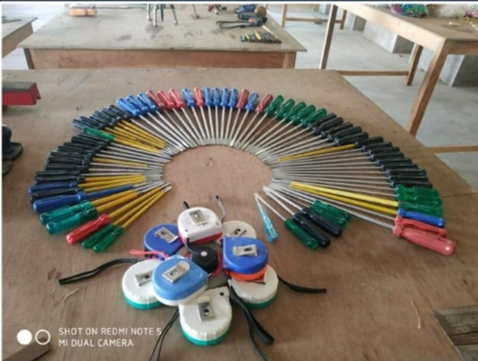
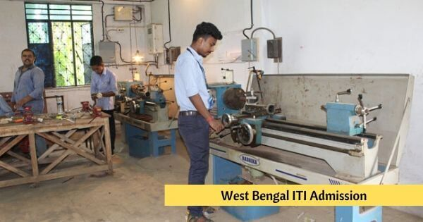
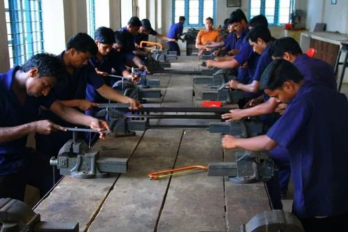
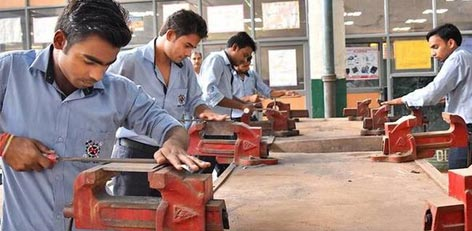
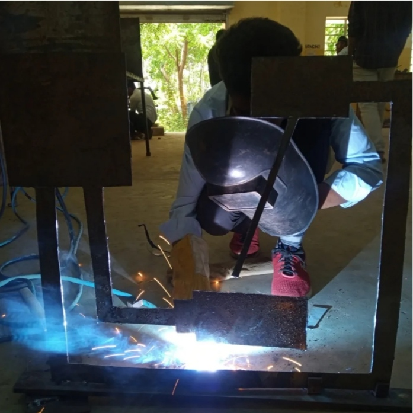
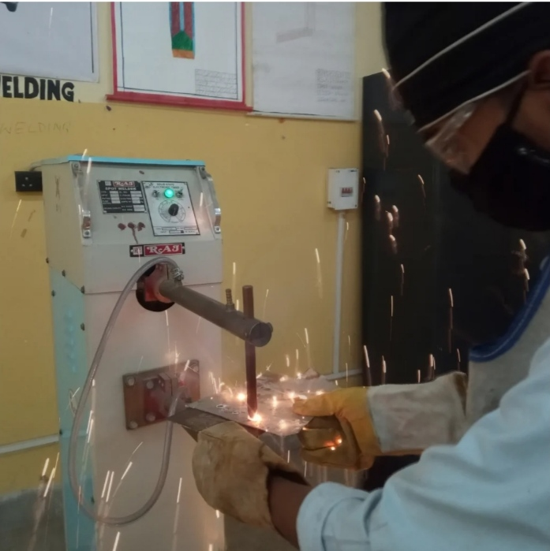
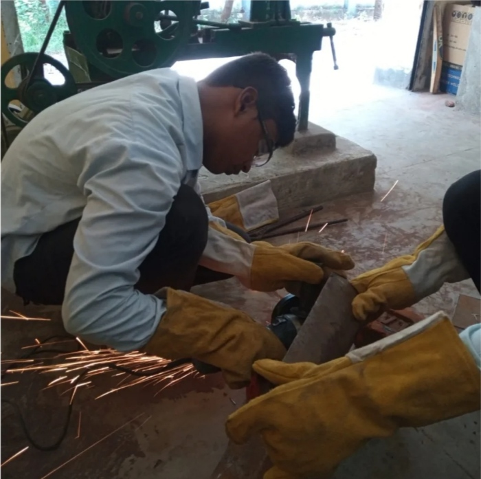

Trade Type: Engineering
Trades Duration: Two Year
Trade Sector: Power
Minimum Qualification Eligibility: 10th Passed
ITI trade Electrician is powered by NCVT.
ITI trade Electrician is a job oriented trade ITI
trade Electrician is suitable for government job
and private job. This ITI trade Electrician is very
powerful for self-empowerment. This ITI trade
Electrician is perfectly design to fulfill industrial
requirement of Indian Industries as well as
International industries.
- Electricians have a wide scope of Employability
ranging from self-employment, contractual employment to Industrial jobs.
- After successful completion of this course, Electricians can aspire to become Electrical Contractors by acquiring the ‘B” licence from the Electrical Licence Board.
- They can set up their own Rewinding and servicing of Domestic Equipment shop.
- Job opportunities are wide open in Defence, Railways, Transport, Ship Building, Electricity Board, various Industries etc
- They can also go for further higher studies after successful completion of course.
- Students who have completed this course have found employment in the following areas:
- Service/Maintenance Technician for domestic appliances in Reputed Companies
- Winder of Electrical Motors in winding shop
- Contractor for domestic wiring and industrial wiring
- Armature winder of Electrical fans and motors
- Electrical appliance repair in electrical shops
- Indian Railway (Asst. Driver, Tech. Gr. III, Appr. Technician)
- Local Electricity Board
- Assembler of Electrical control Gears
- Telephone Department
- Installation and Testing division of Auditorium and Cinema Hall
- Factories
- As Instructor in Govt./Private ITI/ITC
- Merchant Navy
- Indian Air Force
Self-Employment in Service Centre Trades Summery:
(i) Apply safe working practices
(ii) Comply environment regulation and housekeeping
(iii) Prepare profile with an appropriate accuracy as per drawing.
(iv) Prepare electrical wire joints, carry out soldering, crimping and measure insulation resistance of underground cable.
(v) Verify characteristics of electrical and magnetic circuits.
(vi) Install, test and maintenance of batteries and solar cell.
(vii) Estimate, Assemble, install and test wiring system.
(viii) Plan and prepare Earthing installation.
(ix) Plan and execute electrical illumination system and test.
(x) Plan and execute electrical illumination system and test.

Trade Type: Engineering
Trades Duration:Two Years
Trade Sector: Capital Goods & Manufacturing
Minimum Qualification Eligibility : 10th pass
ITI trade Fitter is powered by NCVT. ITI trade Fitter
is a job oriented trade ITI trade Fitter is suitable
for government job and private job. This ITI trade
Fitter is very powerful for self-empowerment. This ITI
trade Fitter is perfectly design to fulfill industrial
requirement of Indian Industries as well as International industries.
Fitters have a wide scope of Employability ranging from
self-employment, contractual employment to Industrial jobs.
On successful completion of this course, the candidates shall
be gainfully employed in the following industries:
- Production & Manufacturing industries.
- Structural Fabrication like bridges, Roof structures,
Building & construction.
- Automobile and allied industries
- Service industries like road transportation and Railways.
- Ship building and repair
- Infrastructure and defence organizations
- In public sector industries like BHEL,
BEML, NTPC, etc and private industries in India & abroad.
- Self employment
Trades Summery:
Fitter is a Mechanical trade in which you can learn about all items related to metal,
Machining of a job(Piece of metal) and also get knowledge about measurement and cutting
tools – equipment.
After compilation of fitter course you can get job as a technician or machine operator
in product manufacturing industries and also in MNC companies. In industries there are
wide range of requirement for fitter passout students.
If you are looking for further studies than you can get admission in direct third
semester of diploma mechanical branch.
If you are not 12th passout than you can get 12th passed
certificate after passing 12th language subject.
- (i) Plan and organize the work to make job as per specification applying different types of basic fitting
operation and Check for dimensional accuracy. [Basic fitting operation – marking, Hacksawing, Chiseling,
Filing, Drilling, Taping and Grinding etc.
- (ii) Manufacture simple sheet metal items as per drawing and join them by soldering, brazing and riveting.
- (iii) Join metal component by arc welding observing standard procedure.
- (iv) Cut and join metal component by gas (oxy-acetylene
- (v) Join metal components by riveting observing standard procedure.
- (vi) Produce components by different operations and check accuracy using appropriate measuring instruments.
[Different Operations – Drilling, Reaming, Taping, Dieing; Appropriate Measuring Instrument – Vernier, Screw Gauge, Micrometer]
- (vii) Make different fit of components for assembling as per required tolerance observing principle of interchangeability
and check for functionality. [Different Fit – Sliding, Angular, Step fit, ‘T’ fit, Square fit and Profile fit; Required tolerance: ±0
- (viii) Produce components involving different operations on lathe observing standard procedure and check for accuracy.
[Different Operations – facing, plain turning, step turning, parting, chamfering, shoulder turn, grooving, knurling, boring, taper turni
- (ix) Plan & perform simple repair, overhauling of different machines and check for functionality. [Different Machines – Drill Machine, Power Saw, Bench Grinder and
- (x) Make & assemble components of different mating surfaces as per required tolerance by different surface finishing operations using different fastening components,
tools and check functionality. [ Different Mating Surfaces – Dovetail fitting, Radi
- (xi) Make different gauges by using standard tools & equipment and checks for specified accuracy.
[Different Gauges – Snap gauge, Gap gauge; Specified Accuracy – ±0.02mm
- (xii) Apply a range of skills to execute pipe joints, dismantle and assemble valves & fittings with pipes and test for leakages.[Range of skills – Cutting, Threading, Flaring, Bending and Joining ]
- (xiii) Make drill jig & produce components on drill machine by using jigs and check for correctness.
- (xiv) Identify, dismantle, replace and assemble different pneumatics and hydraulics components. [Different components – Compressor, Pressure Gauge, Filter Regulator Lubricator, Valves and Actuators.]
- (xv) Construct circuit of pneumatics and hydraulics observing standard operating procedure& safety aspect.
- (xvi) Plan, dismantle, repair and assemble different damaged mechanical components used for power transmission & check functionality. [Different Damage Mechanical Components – Pulley, Gear, Keys, Jibs and Shafts.]
- (xvii) Plan, erect simple machine and test machine tool accuracy. [Simple Machines – Drill Machine, Power Saw and Lathe]
- (xviii) Recognize & comply safe working practices, environment regulation and housekeeping
- (xix) Understand and explain different mathematical calculation & science in the field of study including basic electrical. [Different mathematical
calculation & science -Work, Power & Energy, Algebra, Geometry & Mensuration, Trigonometry, Heat &Temperat
- (xx) Interpret specifications, different engineering drawing and apply for different application in the field of work. [Different engineering
drawing-Geometrical construction, Dimensioning, Layout, Method of representation, Symbol, scales, Different Project
- (xxi) Select and ascertain measuring instrument and measure dimension of components and record data.
- (xxii) Explain the concept in productivity, quality tools, and labour welfare legislation and apply such in day to day work to improve productivity & quality.
- (xxiii) Explain energy conservation, global warming and pollution and contribute in day to day work by optimally using available resources.
- (xxiv) Explain personnel finance, entrepreneurship and manage/organize related task in day to day work for personal & societal growth
- (xxv) Plan and organize the work related to the occupation



Trade Type: Engineering
Trades Duration: One year
Trade Sector: Capital Goods & Manufacturing
Minimum Qualification Eligibility: 8th Passed
ITI trade Welder is powered by NCVT. ITI trade Welder is a job oriented trade
ITI trade Welder is suitable for government job and private job. This ITI trade Welder
is very powerful for self-empowerment. This ITI trade Welder is perfectly design to fulfill
industrial requirement of Indian Industries as well as International industries.
Gas welding (includes gas cutting), Arc welding, TIG welding, MIG/MAG welding etc.
Trades Summery:
(i) Install and setup operating system and Set the gas welding plant and join MS sheet in different position. [Different position: – 1F, 2F, 3F, 1G, 2G, 3G.]
(ii) Set the SMAW machine and perform different type of joints on MS in different position observing standard procedure. [different types of joints- Fillet ( T-joint, lap & Corner), Butt (Square & V); different position – 1F, 2F, 3F,4F, 1G, 2G, 3G, 4G]
(iii) Set the oxy- acetylene cutting plant and perform different cutting operations on MS plate. [Different cutting operation – Straight, Bevel, circular]
(iv) Perform welding in different types of MS pipe joints by Gas welding (OAW). [Different types of MS pipe joints – Butt, Elbow, T-joint, angle (45°) joint, flange joint]
(v) Set the SMAW machine and perform welding in different types of MS pipe joints by SMAW. [Different types of MS pipe joints – Butt, Elbow, T-joint, angle (45°) joint, flange joint]
(vi) Choose appropriate welding process and perform joining of different types of metals and check its correctness. [appropriate welding process – OAW, SMAW; Different metal – SS, CI, Brass, Aluminium]
(vii) Demonstrate arc gauging operation to rectify the weld joints.
(viii) Test welded joints by different methods of testing. [different methods of testing- Dye penetration test, Magnetic particle test, Nick break test, Free band test, Fillet fracture test]
(ix) Set GMAW machine and perform welding in different types of joints on MS sheet/plate by GMAW in various positions by dip mode of metal transfer. [different types of joints- Fillet ( T-joint, lap, Corner), Butt (Square & V); various positions- 1F, 2F,
(x) Set the GTAW machine and perform welding by GTAW in different types of joints on different metals in different position and check correctness of the weld. [different types of joints- Fillet ( T-joint, lap, Corner), Butt (Square & V) ; different metals
(xi) Perform Aluminium & MS pipe joint by GTAW in flat position.
(xii) Set the Plasma Arc cutting machine and cut ferrous & non-ferrous metals.
(xiii) Set the resistance spot welding machine and join MS & SS sheet.
(xiv) Perform joining of different similar and dissimilar metals by brazing operation as per standard procedure. [different similar and dissimilar metals- Copper, MS, SS]
(xv) Repair Cast Iron machine parts by selecting appropriate welding process. [Appropriate welding process- OAW, SMAW]
(xvi) Hard facing of alloy steel components / MS rod by using hard facing electrode.
(xvii) Recognize & comply safe working practices, environment regulation and housekeeping
(xviii) Understand and explain different mathematical calculation & science in the field of study including basic electrical. [Different mathematical calculation & science -Work, Power & Energy, Algebra, Geometry & Mensuration, Trigonometry, Heat & Temper
(xix) Interpret specifications, different engineering drawing and apply for different application in the field of work. [Different engineering drawing-Geometrical construction, Dimensioning, Layout, Method of representation, Symbol, Different Projections,
(xx) Select and measure dimension of components and record data.
(xxi) Explain the concept in productivity, quality tools, and labour welfare legislation and apply such in day to day work to improve productivity & quality.
(xxii) Explain energy conservation, global warming and pollution and contribute in day to day work by optimally using available resources.
(xxiii) Explain personnel finance, entrepreneurship and manage/organize related task in day to day work for personal & societal growth.
(xxiv) Plan and execute the work related to the occupation.


